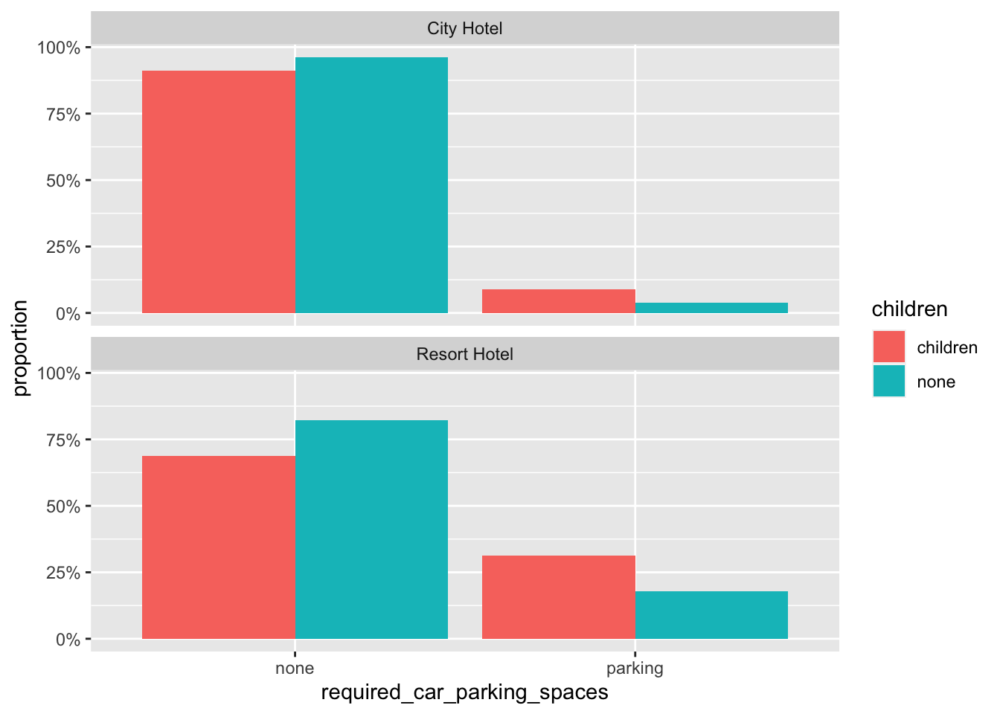

Analysis of Hotel Booking in relation to child stay.
This analysis contains the hotel booking data from Year 2015 - 2017. The data is processed to display the booking result in two different hotels with and without children.
We will analyse only the records where the guest stayed and removeRemoving unnecessary columns and canceled booking data.
hotels <- hotels %>% select(hotel, is_canceled, arrival_date_month, stays_in_weekend_nights, stays_in_week_nights, adults, children, babies, meal, reserved_room_type, assigned_room_type, adr, required_car_parking_spaces, total_of_special_requests)
hotel_stayed <- hotels %>%
filter(is_canceled == 0)
hotel_stayed <- hotel_stayed %>%
select(-c("is_canceled"))Combining children and baby stay to one column and changing numeric to character. Same with parking space.
hotel_stayed<- hotel_stayed %>% mutate(children = case_when(
children + babies >0 ~"children", TRUE ~ "none"),
required_car_parking_spaces = case_when(
required_car_parking_spaces > 0 ~ "parking", TRUE ~ "none"
)
) %>% select(-babies)Converting arrival month to factor to rearrange from Jan - Dec.
hotel_stayed %>%
mutate(arrival_date_month = factor(arrival_date_month, levels = month.name)) %>%
count(hotel, arrival_date_month, children) %>%
group_by(hotel, children) %>%
mutate(proportion = n/sum(n))## # A tibble: 48 x 5
## # Groups: hotel, children [4]
## hotel arrival_date_month children n proportion
## <chr> <fct> <chr> <int> <dbl>
## 1 City Hotel January children 153 0.0432
## 2 City Hotel January none 2101 0.0492
## 3 City Hotel February children 263 0.0743
## 4 City Hotel February none 2801 0.0656
## 5 City Hotel March children 213 0.0602
## 6 City Hotel March none 3859 0.0904
## 7 City Hotel April children 339 0.0957
## 8 City Hotel April none 3676 0.0861
## 9 City Hotel May children 205 0.0579
## 10 City Hotel May none 4374 0.102
## # … with 38 more rowsPlot displaying 2 hotel, City and Resort Hotel, number of guest with and without children through out the year. The data from 3 years is combined according to the month and displayed in the graph below.
hotel_stayed %>%
mutate(arrival_date_month = factor(arrival_date_month, levels = month.name)) %>%
count(hotel, arrival_date_month, children) %>% group_by(hotel, children) %>%
mutate(proportion = n/sum(n)) %>%
ggplot(aes(arrival_date_month, proportion, fill = children)) +
geom_col(position = "dodge") +
scale_y_continuous(labels = scales::percent_format()) +
facet_wrap(~hotel, nrow = 2)Creating plot for car parking spaces required for hotel bookings. Displaying 2 hotel, City and Resort Hotel, guest requesting car park whith children and without children.
hotel_stayed %>% count(hotel, required_car_parking_spaces, children) %>%
group_by(hotel, children) %>% mutate(proportion = n/sum(n)) %>%
ggplot(aes(required_car_parking_spaces, proportion, fill = children)) + geom_col(position = "dodge") +
scale_y_continuous(labels = scales::percent_format()) +
facet_wrap(~hotel, nrow = 2)
Displaying relationship between different category.
hotel_stayed %>% select(children, adr, required_car_parking_spaces, total_of_special_requests)%>%
ggpairs(mapping = aes(color = children))##
plot: [1,1] [===>------------------------------------------------------------] 6% est: 0s
plot: [1,2] [=======>--------------------------------------------------------] 12% est: 2s
plot: [1,3] [===========>----------------------------------------------------] 19% est: 3s
plot: [1,4] [===============>------------------------------------------------] 25% est: 3s
plot: [2,1] [===================>--------------------------------------------] 31% est: 3s `stat_bin()` using `bins = 30`. Pick better value with `binwidth`.
##
plot: [2,2] [=======================>----------------------------------------] 38% est: 3s
plot: [2,3] [===========================>------------------------------------] 44% est: 2s
plot: [2,4] [===============================>--------------------------------] 50% est: 2s
plot: [3,1] [===================================>----------------------------] 56% est: 2s
plot: [3,2] [=======================================>------------------------] 62% est: 2s `stat_bin()` using `bins = 30`. Pick better value with `binwidth`.
##
plot: [3,3] [===========================================>--------------------] 69% est: 1s
plot: [3,4] [===============================================>----------------] 75% est: 1s
plot: [4,1] [===================================================>------------] 81% est: 1s `stat_bin()` using `bins = 30`. Pick better value with `binwidth`.
##
plot: [4,2] [=======================================================>--------] 88% est: 1s
plot: [4,3] [===========================================================>----] 94% est: 0s `stat_bin()` using `bins = 30`. Pick better value with `binwidth`.
##
plot: [4,4] [================================================================]100% est: 0s